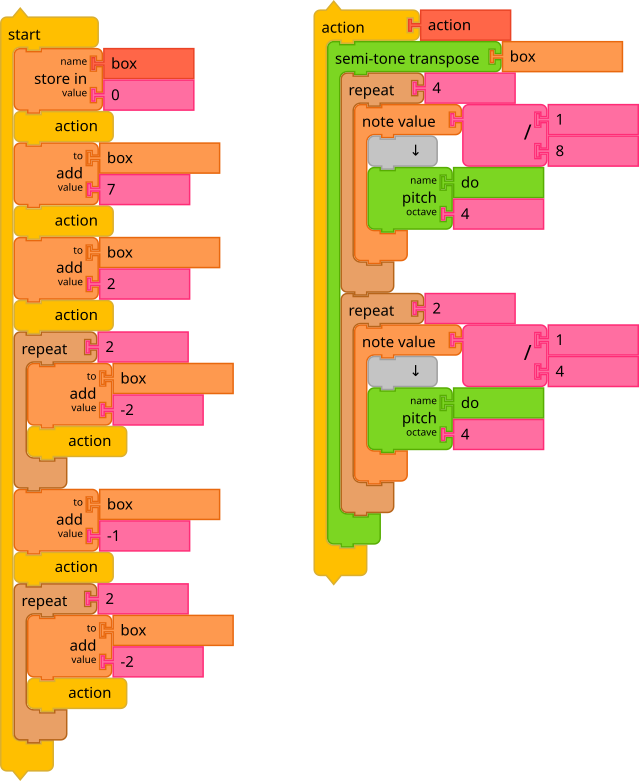
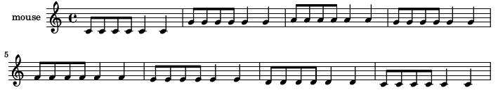

English | Español | 日本語 | 中文 | Português
5. Beyond Music Blocks
Previous Section (4. Widgets) | Back to Table of Contents | Next Section (6. Appendix)
Music Blocks is a waypoint, not a destination. One of the goals is to point the learner towards other powerful tools.
5.1 Lilypond
One such tool is Lilypond, a music engraving program.

The Save as Lilypond option from the Save menu will transcribe your composition (Only available in Advanced Mode).
Note that if you use a Print block inside of a note, Lilypond will create a "markup" or annotation for that note. It is a simple way to add lyrics to your score.
\version "2.18.2"
mouse = {
c'8 c'8 c'8 c'8 c'4 c'4 g'8 g'8 g'8 g'8 g'4 g'4 a'8 a'8 a'8 a'8 a'4
a'4 g'8 g'8 g'8 g'8 g'4 g'4 f'8 f'8 f'8 f'8 f'4 f'4 e'8 e'8 e'8 e'8
e'4 e'4 d'8 d'8 d'8 d'8 d'4 d'4 c'8 c'8 c'8 c'8 c'4 c'4
}
\score {
<<
\new Staff = "treble" {
\clef "treble"
\set Staff.instrumentName = #"mouse" \mouse
}
>>
\layout { }
}

5.2 Other Exports
In addition to Lilypond, there are several other export formats supported, including ABC, MusicXML, WAV, SVG, and PNG.
ABC notation is a shorthand form of musical notation. In basic form it uses the letters A through G, letter notation, to represent the given notes, with other elements used to place added value on these – sharp, flat, the length of the note, key, ornamentation (See https://en.wikipedia.org/wiki/ABC_notation).
MusicXML is an XML-based file format for representing Western musical notation. The format is open, fully documented, and can be freely used under the W3C Community Final Specification Agreement (See https://en.wikipedia.org/wiki/MusicXML).
WAV (Waveform Audio File Format) is an audio file format standard, developed by IBM and Microsoft, for storing an audio bitstream on PCs (See https://en.wikipedia.org/wiki/WAV).
PNG (Portable Network Graphics) is a raster-graphics file format that supports lossless data compression (See https://en.wikipedia.org/wiki/Portable_Network_Graphics). You can save your artwork as PNG.
SVG (Scalable Vector Graphics) is an Extensible Markup Language (XML)-based vector image format for two-dimensional graphics with support for interactivity and animation (See https://en.wikipedia.org/wiki/Scalable_Vector_Graphics). You can also save your artwork as SVG.
Note that artwork saved as PNG or SVG can subsequently be imported into Music Blocks to be used with either the Show or Avatar blocks.
MIDI (Musical Instrument Digital Interface) is a technical standard for communicating musical performance data between electronic instruments, computers, and other devices. It does not store actual sound but encodes note, pitch, velocity, and instrument information, making it widely used for digital music composition and playback (See https://en.wikipedia.org/wiki/MIDI). Exported MIDI files can also be imported, allowing seamless editing and reuse of musical data.
Help artwork
Note for translators: The artwork used by the help widget (and used in this README file) can be created by typing Alt-H into Music Blocks. Artwork for each block will be generated and saved by the browser.
5.3 The JavaScript Editor
There are practical limits to the size and complexity of Music Blocks programs. At some point we expect Music Blocks programmers to move on to text-based programming languages. To facilitate this transition, there is a JavaScript widget that will convert your Music Blocks program into JavaScript.
The JavaScript code is written and viewed on the JavaScript Editor
widget which can be opened by pressing on the "Toggle JavaScript
Editor" (<>) button in the auxilliary menu.
Example code
For the block stacks (and mouse art generated after running),

the following code is generated:
let action = async mouse => {
await mouse.playNote(1 / 4, async () => {
await mouse.playPitch("do", 4);
console.log(mouse.NOTEVALUE);
return mouse.ENDFLOW;
});
let box1 = 0;
let box2 = 360 / mouse.MODELENGTH;
for (let i0 = 0; i0 < mouse.MODELENGTH * 2; i0++) {
await mouse.playNote(1 / 4, async () => {
if (box1 < mouse.MODELENGTH) {
await mouse.stepPitch(1);
await mouse.turnRight(box2);
} else {
await mouse.stepPitch(-1);
await mouse.turnLeft(box2);
}
await mouse.goForward(100);
return mouse.ENDFLOW;
});
box1 = box1 + 1;
}
return mouse.ENDFLOW;
};
new Mouse(async mouse => {
await mouse.clear();
await mouse.setInstrument("guitar", async () => {
await mouse.setColor(50);
await action(mouse);
return mouse.ENDFLOW;
});
return mouse.ENDMOUSE;
});
MusicBlocks.run();
Here's the complete API of methods, getters, setters.